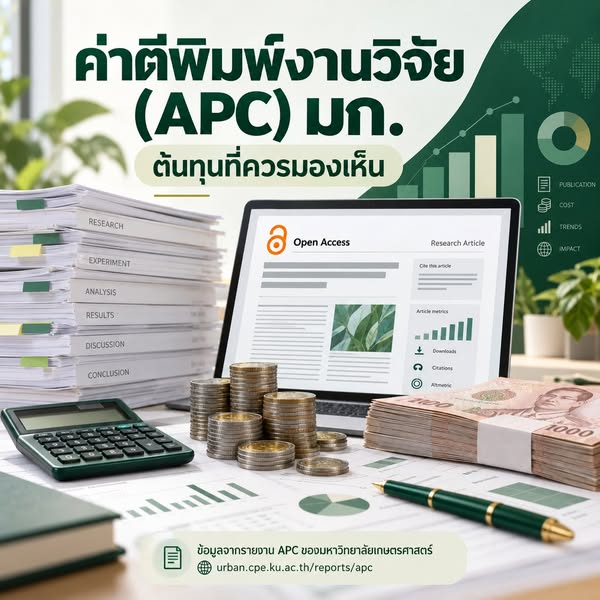

ค่าตีพิมพ์งานวิจัย มก. ต้นทุนที่ควรมองเห็น


ค่าตีพิมพ์บทความวิจัย หรือ Article Processing Charge (APC) เป็นอีกส่วนหนึ่งของต้นทุนการทำวิจัย บางวารสารคิดเป็นหลักหมื่นถึงหลักแสนบาทต่อบทความ ผมจึงอยากชวนดูข้อมูลต้นทุนการเผยแพร่ผลงานของมหาวิทยาลัยเกษตรศาสตร์ให้เห็นภาพมากขึ้น
ข้อมูลชุดนี้นำผลงานวิจัยมาเชื่อมโยงกับ OpenAlex เพื่อสำรวจต้นทุนการตีพิมพ์ มีทั้ง APC List หรือข้อมูลอัตราค่าตีพิมพ์ และ APC Paid หรือค่าตีพิมพ์ที่มีการบันทึกว่าจ่าย โดยเปิดดูได้จาก รายงานค่าใช้จ่ายการตีพิมพ์ APC ของ มก.
ข้อมูลชุดนี้ยังไม่ใช่ยอดรายจ่ายจริงทั้งหมดของมหาวิทยาลัย
ข้อจำกัดสำคัญคือ ข้อมูลยังไม่ครบ และระบุผู้จ่ายไม่ได้เสมอไป ตัวเลข APC List และ APC Paid จึงใช้แทนรายจ่ายจริงทั้งหมดของมหาวิทยาลัยไม่ได้ การมีค่าที่บันทึกว่าจ่ายก็ยังไม่ได้ตอบว่าเงินนั้นมาจากงบมหาวิทยาลัย ทุนวิจัย หรือกระเป๋าของอาจารย์เอง
ผมมองว่าข้อมูลนี้เป็นจุดเริ่มต้นให้สำรวจทั้งขนาดของต้นทุนการเผยแพร่และ ผู้รับภาระค่าใช้จ่าย เพื่อให้มีข้อมูลประกอบการคิดนโยบายสนับสนุนงานวิจัยต่อไป
การประเมินผลงานควรมองเห็นต้นทุนที่เกิดกับอาจารย์ด้วย
ที่ผ่านมาเราพูดถึงจำนวนบทความ Q1, Q2 และอันดับมหาวิทยาลัยกันมาก ต้นทุนที่ต้องจ่ายเพื่อให้เกิดผลงานเหล่านั้นก็ควรถูกนำมาพิจารณาร่วมกัน หากมหาวิทยาลัยใช้การตีพิมพ์เป็นเงื่อนไขสำคัญในการประเมินอาจารย์ ก็ควรรู้ว่าความคาดหวังนั้นสร้างภาระให้ใครและมากน้อยเพียงใด
การเผยแพร่งานวิจัยมีต้นทุน และ Open Access ก็มีคุณค่า การทำให้ต้นทุนและผู้จ่ายมองเห็นได้จึงเป็นข้อมูลพื้นฐานที่ควรมีก่อนออกแบบนโยบายสนับสนุนงานวิจัย